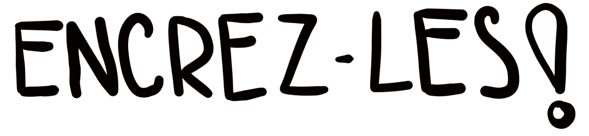

Ne laissez pas vos idées
prendre le large

Mes services
cliquez sur une vignette pour en savoir plus
Qui suis-je ?
Je suis Marie, facilitatrice graphique et facilitatrice en intelligence collective. Mon metier ? Transformer les idees en images pour clarifier, engager et faire avancer les projets. J'ai decouvert la facilitation graphique alors que je coordonais des equipes et des projets transfrontaliers. Ce qui nétait au depart quun simple outil pour mieux federer et structurer les echanges est vite devenu une evidence. Convaincue de son impact, je me suis formée a la facilitation graphique et au generative scribing pour affiner mon approche. Pour moi, le visuel est bien plus qu'un simple dessin : cest un levier puissantpour structurer la pensee et accompagner le changement. Fresqueuse du changement, j'‘aide a rendre les transformations concretes et accessibles notamment par le visuel. Mon style ? Vivant et evocateur, concu pour aller a l'essentiel sans perdre en richesse. En plus de mes interventions, je forme aussi a la facilitation graphique, pour que chacun.e puisse integrer la pensée visuelle a son quotidien, que ce soit en francais, en allemand ou en anglais. Parce que vos messages meritent détre memorables, rendons les visuels!
Comment collaborer avec moi ?
Portfolio


Ce qu’ils pensent de moi
Anne-Charlotte Chatard
Marie a brillamment synthétisé les échanges d’une journée de séminaire, créant des visuels de plus en plus percutants. Son aisance, son écoute attentive et sa finesse relationnelle ont conquis même des experts habitués à ce type de communication.
Sarah Memmi Machado
Depuis 2024, j’ai la chance de collaborer avec Marie L’encreuse sur plusieurs projets de facilitation graphique. Créative, à l’écoute et très professionnelle, elle transforme nos intentions et valeurs en outils visuels pédagogiques d’une grande qualité – le tout dans la bonne humeur.
Djeynaba T.
J'ai présenté ces visuels à l'équipe et elles ont été enchantées du résultat. (...) Merci encore pour votre excellent travail et votre réactivité.
Léa. T. Care France
Marie a immédiatement cerné nos enjeux et messages clés. Son talent pour capter et illustrer en direct les échanges sur scène en quelques coups de crayon est tout simplement bluffant.
Contactez-moi !
Mentions légales
Votre texte ici : éditeur, hébergeur, droits, politique de confidentialité, etc.